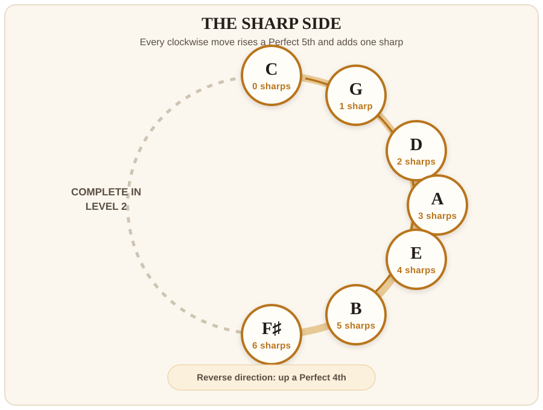

Chapter 31
Music Theory: Introducing the Circle of Fifths
In the last chapter, you built the A, E, B, and F♯ Major scales. Along the way, you discovered two patterns:
- The C Major scale and key signature have no sharps. G Major has one sharp, and D Major has two. The count continues until F♯ Major has six.
- Every new tonic is a Perfect 5th above the tonic before it.
A Major scale is an ordered collection of notes built around a tonic. A Major key is the larger musical setting in which that tonic feels like home and the Major scale supplies the basic notes and chords. A key signature writes the scale's recurring sharps or flats at the beginning of the staff. The Circle of Fifths arranges keys by tonic and shows how their key signatures are related.
Those are not two separate tricks. Put them together and you have already built the sharp side of one of music theory's most useful maps: the Circle of Fifths.
The map you already built

Start with C at the top and move clockwise. Each move does three things:
- The new tonic is a Perfect 5th above the previous tonic.
- The new key signature keeps every sharp that the previous key signature already had.
- The new key signature adds one sharp. In the new Major scale, that sharp is the 7th scale degree—the leading tone just below the tonic.
| Major key | Number of sharps | Key signature | New sharp |
|---|---|---|---|
| C | 0 | No sharps or flats | — |
| G | 1 | F♯ | F♯ |
| D | 2 | F♯, C♯ | C♯ |
| A | 3 | F♯, C♯, G♯ | G♯ |
| E | 4 | F♯, C♯, G♯, D♯ | D♯ |
| B | 5 | F♯, C♯, G♯, D♯, A♯ | A♯ |
| F♯ | 6 | F♯, C♯, G♯, D♯, A♯, E♯ | E♯ |
For now, read this as a map of the Major keys you have built and their key signatures. Each signature collects the sharps required by its Major scale.
Two chains, two jobs
The Major key names follow C–G–D–A–E–B–F♯. The order of sharps follows F♯–C♯–G♯–D♯–A♯–E♯. Both move in 5ths, but they begin on different notes.
Watch the spelling at the bottom of the arc. The sixth sharp in F♯ Major is E♯, not F natural. The rule that a Major scale uses every letter name once still applies.
Why are we showing only one side?
The complete map forms a circle, but you have not studied every key signature yet. For now, the right side contains exactly the Major keys you earned by building scales in Level 1. In Level 2, you will return to this map and complete the other side.
Exercise 1—Rebuild the sharp side
Draw before you check
Cover the diagram. Draw seven points along the right half of a circle. Put C at the top and F♯ at the bottom. Fill in the five Major keys between them. Then write the number of sharps beside every key.
Exercise 2—Complete the two chains
- Major keys: C → G → ___ → A → ___ → B → ___
- Order of sharps: F♯ → C♯ → ___ → D♯ → ___ → E♯
Exercise 3—Read the map
- Which Major key has four sharps? Write all four sharps.
- Which Major key adds A♯ as its newest sharp?
- Start on D and move through three Perfect 5ths. Which key do you reach? How many sharps are in its key signature?
- Start on F♯ and move backward through three Perfect 4ths. Which key do you reach?
- In one sentence, explain why the same path produces 5ths in one direction and 4ths in the other.
Level 1 checkpoint
At the end of this chapter, you should be able to:
- Recite C–G–D–A–E–B–F♯ and reverse it.
- Name the number and order of sharps in the key signature of any of those Major keys.
- Explain why moving one way gives Perfect 5ths while moving the other way gives Perfect 4ths.
Answer key
- Exercise 2, Major keys: D, E, F♯.
- Exercise 2, sharps: G♯, A♯.
- Exercise 3.1: E Major; F♯, C♯, G♯, D♯.
- Exercise 3.2: B Major.
- Exercise 3.3: D–A–E–B; the B Major key signature has five sharps.
- Exercise 3.4: F♯–B–E–A; A Major.
- Exercise 3.5: A Perfect 5th and a Perfect 4th complete an octave, so the opposite direction around the pitch-class circle is read in ascending 4ths.